Graphic design
Print and illustration work outside my case studies.
Black N White, a 41-page charity fanzine
I was in charge of formatting the zine, including the layout, table of contents, and credit pages, and most importantly making sure it had a clear visual language and felt cohesive. With 33 contributors working in very different styles, it was a fun challenge to fit everything together through the framing and type system so it felt like one book.
The credit pages are based on the menus in Pokémon Black and White, and the fonts were chosen to match the theme: a pixel font for headers and page numbers, and a sans-serif font for body text, for ease of reading. Green became the key accent color, used for the frames, titles, and highlights, because the zine centers on the character N.
The zine raised $2,012.58 for the Rainforest Trust.
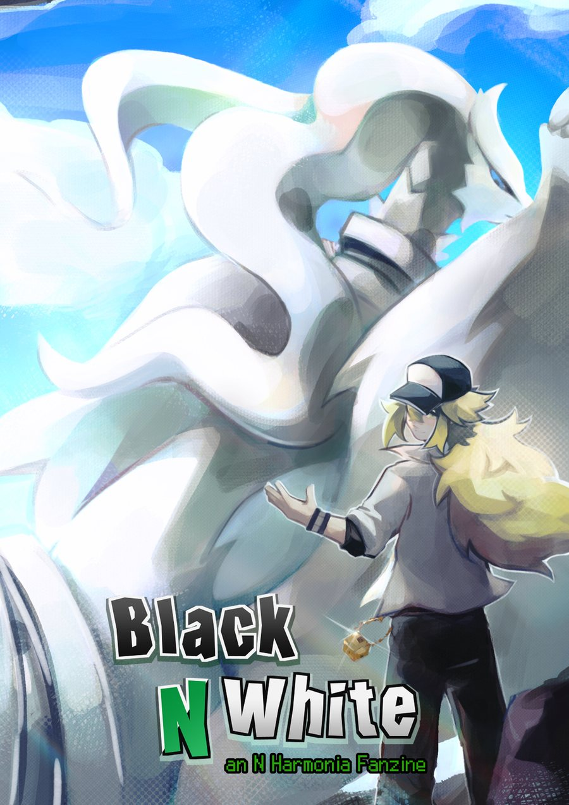
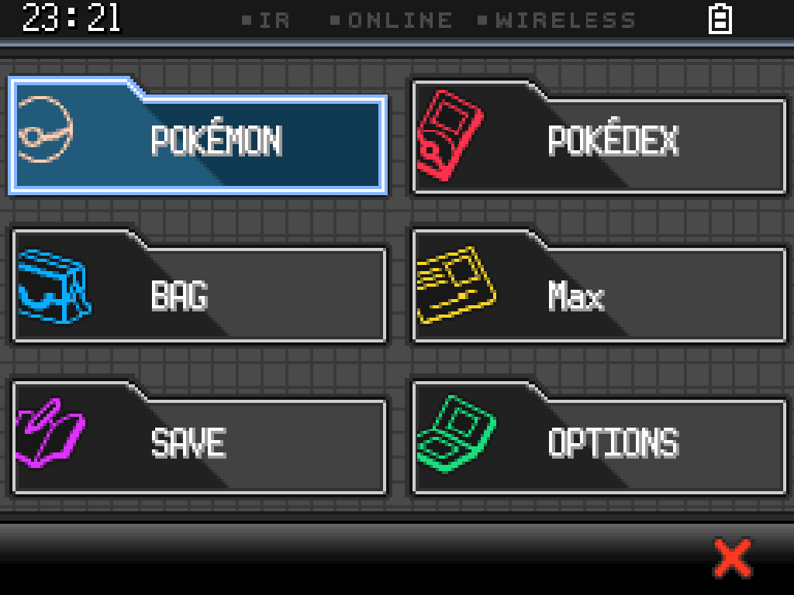
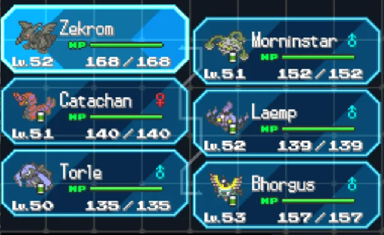
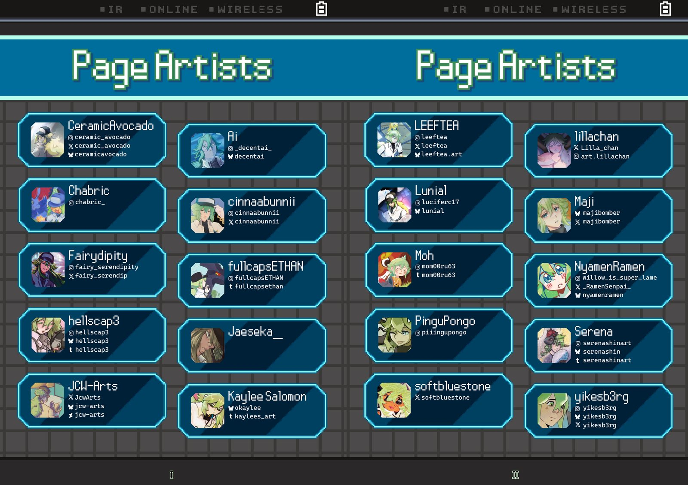
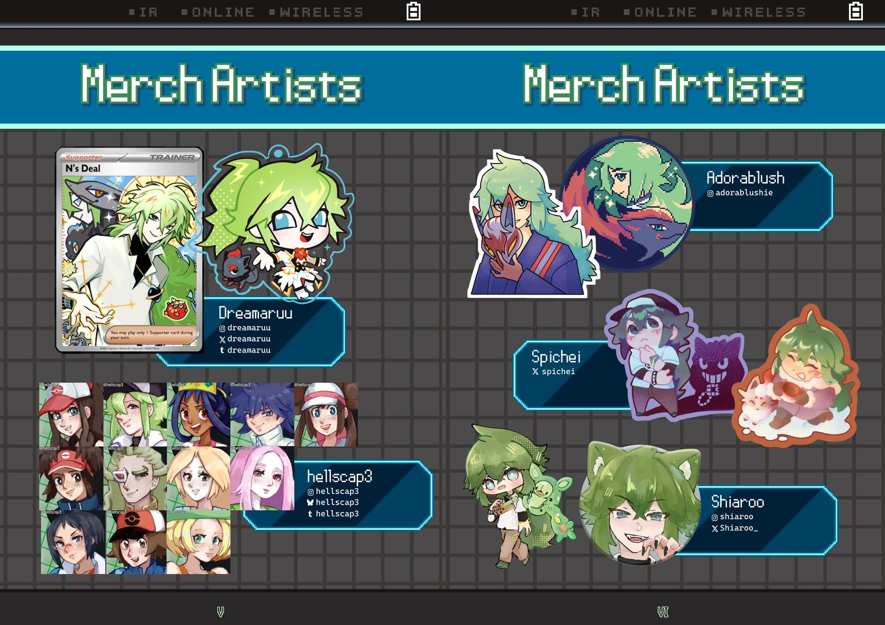
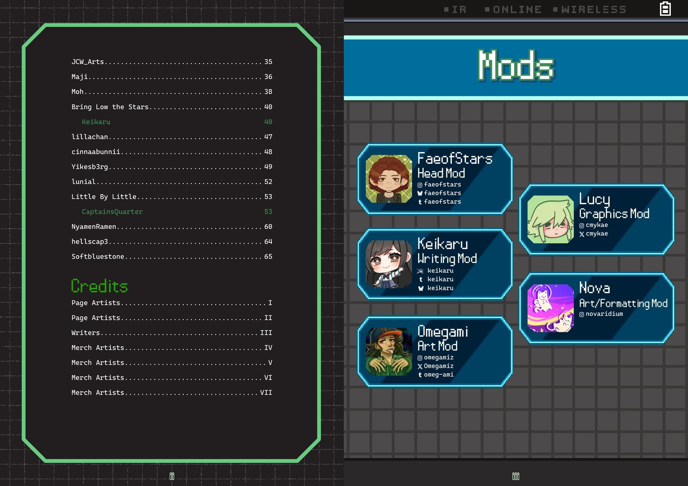
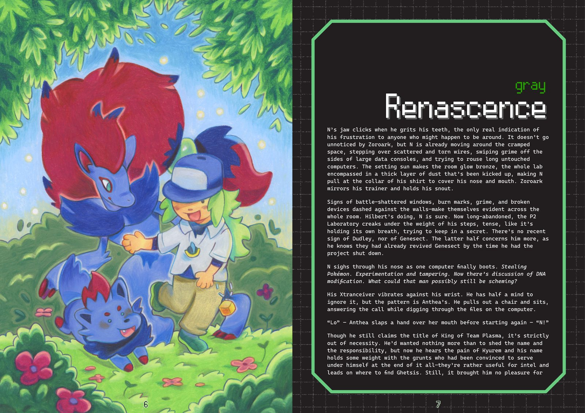
Jewel Tones zine cover
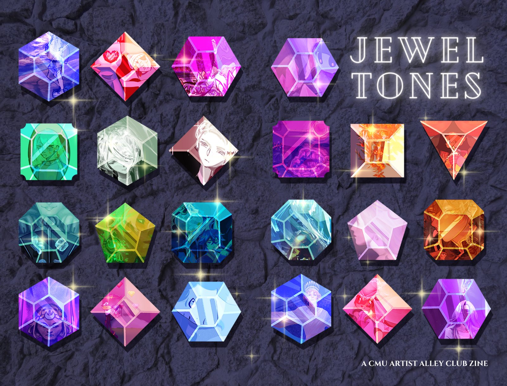
Event signage
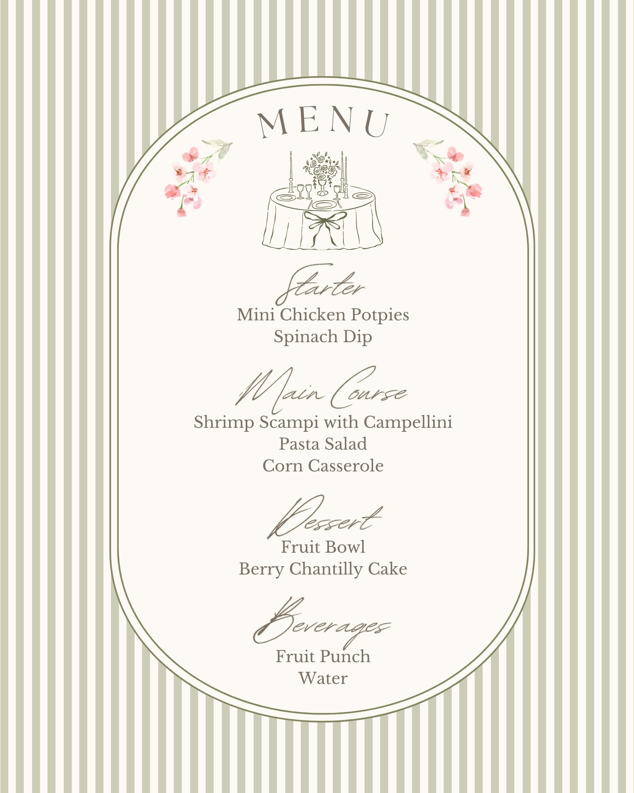
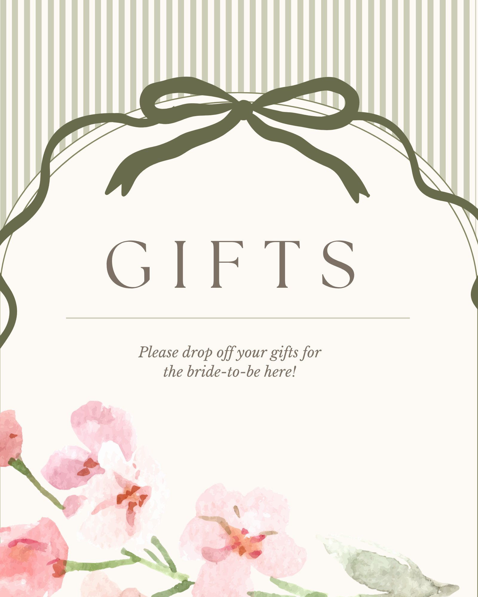
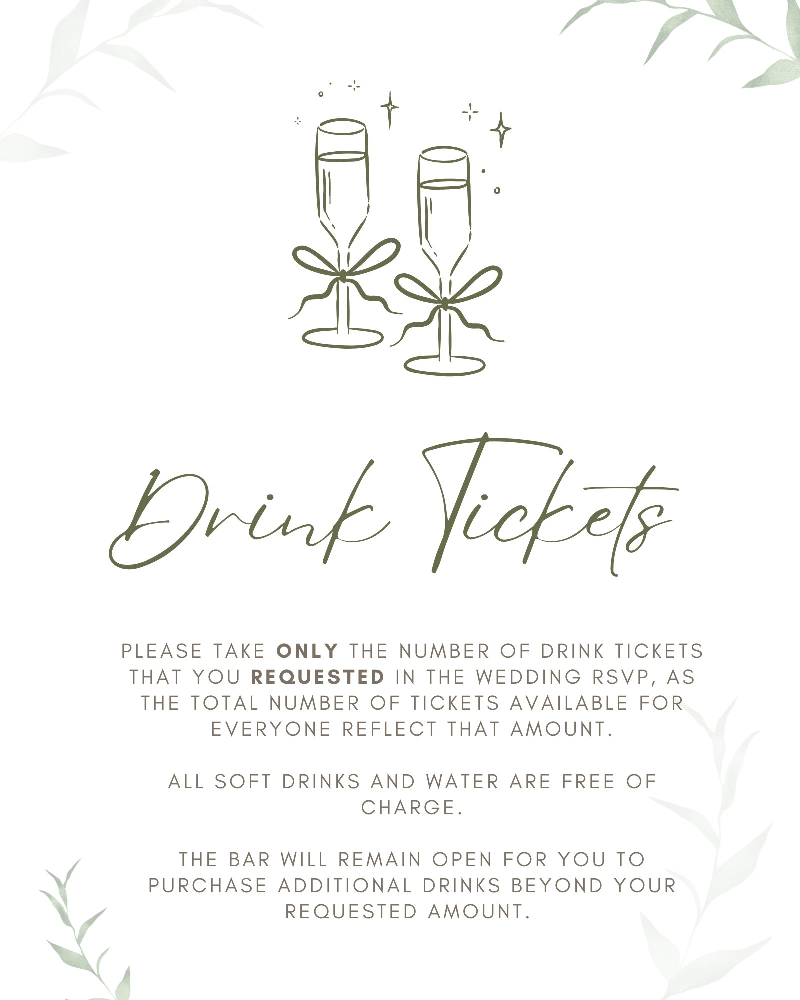